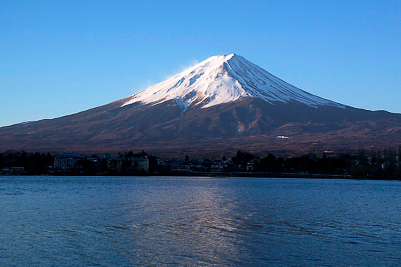

Inglaterra
| Información | |||||||||||||||||||||
|---|---|---|---|---|---|---|---|---|---|---|---|---|---|---|---|---|---|---|---|---|---|
|
Inglaterra, la cuna de Shakespeare y The Beatles, es un país de las Islas Británicas que limita con Escocia y Gales. La capital, Londres, se ubica en el río Támesis y cuenta con el Parlamento, el Big Ben y la Torre de Londres del siglo XI. También es un centro artístico y comercial moderno y multicultural. |

| ||||||||||||||||||||
Lugares y ciudades para visitarLondresUna de las mejores cosas que hacer en Inglaterra es visitar Londres, una ciudad única en el mundo que destaca por su diversidad y su oferta interminable de ocio y cultura. Con más de 2.000 años de historia, la ciudad mantiene muchas de sus tradiciones como los salones de té o las tabernas para tomar una buena pinta después del trabajo, aunque tampoco se mantiene alejada de la modernidad y de los edificios futuristas.Recorrer sus impresionantes mercados callejeros como Camden o Brick Lane, subir a los miradores como The Shard, relajarse en sus cuidados parques como Hyde Park |

| ||||||||||||||||||||
Ir a un karaokeEn Japón los karaokes son muy famosos puesto que son diferentes a la mayoría de los países.En Japón cuando vas a un karaoke alquilas una habitación privada para estar con tus amigos y en desde la habitación puedes pedir bebidas y te las llevan. |

| ||||||||||||||||||||
Visitar el monte FujiEl mejor momento para subir al monte Fuji es en julio y agosto. |  | ||||||||||||||||||||
Aquí te dejamos un vídeo que podría aclararte algunas ideas sobre tu viaje. | |||||||||||||||||||||
| Alojamiento | |||||||||||||||||||||
| |||||||||||||||||||||
| Restaurantes | |||||||||||||||||||||

|
Sukiyabashi JiroUn restaurante de sushi muy pequeño en Tokio con solo diez asientos en la barra. Este establecimiento ha sido galardonado con tres estrellas. El restaurante apareció en el documental Jiro Dreams of Sushi de 2011, y un chef francés declaró que el restaurante le mostró que el sushi es una forma de arte. El menú de degustación omakase de 20 platos cuesta alrededor de 30.000 yenes. | ||||||||||||||||||||
Ginza KojyuElige entre sushi, más de 60 vinos diferentes, sake, ofertas de temporada o elija su menú kaiseki de varios platos en un comedor tipo zen. El Chef Toru Okuda tiene otros 2 restaurantes en Tokio, en caso de que no esté disponible para reservar durante tu estancia en la ciudad. El precio ronda los 25.000 yenes |

| ||||||||||||||||||||